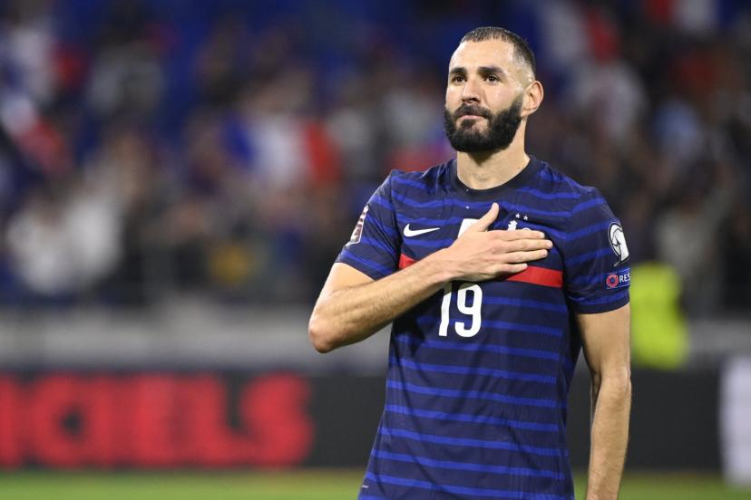

Karim Benzema, surnommé KB9 ou El Nueve en Espagne, né le 19 décembre 1987 à Lyon, est un footballeur international français évoluant au poste d'avant-centre au Real Madrid. Natif de Lyon, il intègre le centre de formation de l'Olympique lyonnais à l'âge de dix ans et signe son premier contrat professionnel en 2005.

Vainqueur de la Ligue des Nations avec l’équipe de France et surtout de la Ligue des champions ainsi que de la Liga avec le Real, meilleur buteur des deux compétitions et auteur de coups d’éclat en série, le Français est attendu sur la scène du Chatelet, lundi prochain, pour recevoir la plus prestigieuse des récompenses.